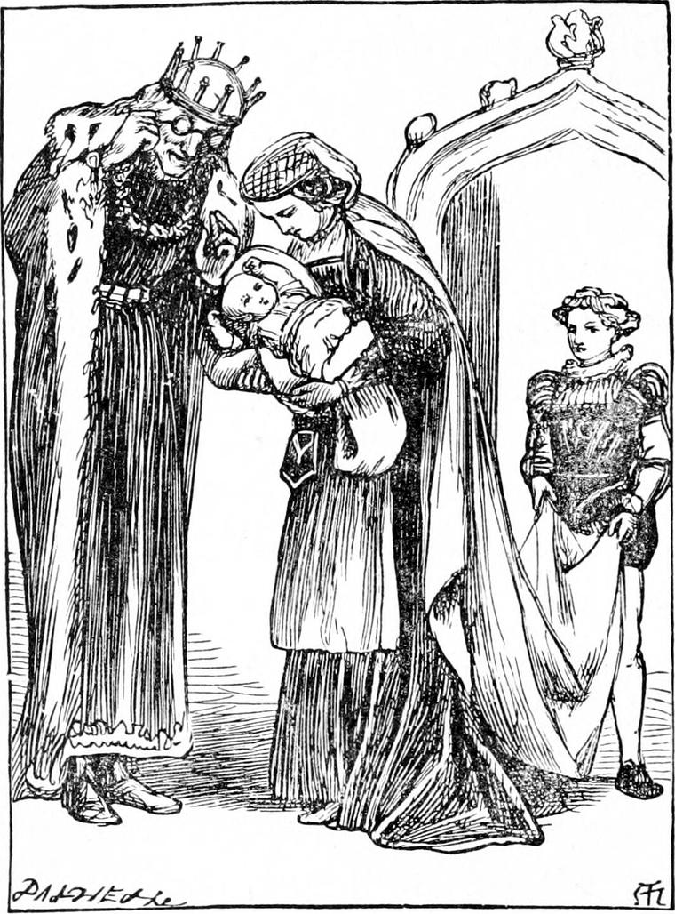
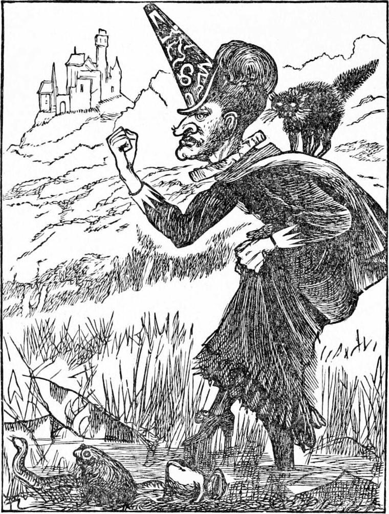
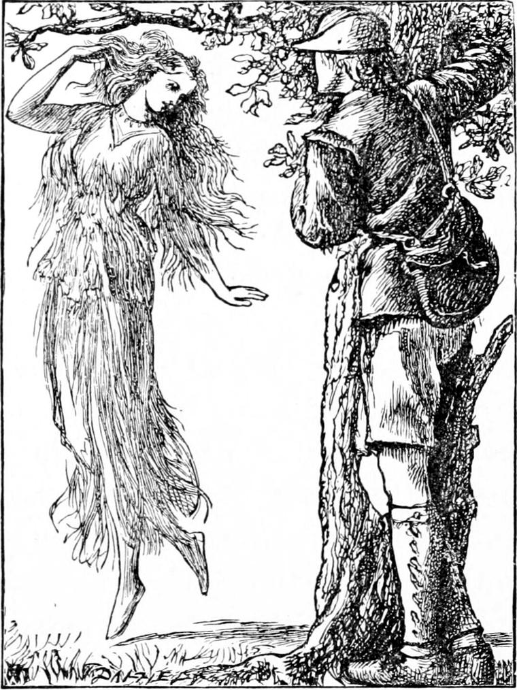

NO HOUSE of any pretension to be called a palace is in the least worthy of the name, except it has a wood near it—very near it—and the nearer the better. Not all round it—I don't mean that, for a palace ought to be open to the sun and wind, and stand high and brave, with weathercocks glittering and flags flying; but on one side of every palace there must be a wood. And there was a very grand wood indeed beside the palace of the king who was going to be Daylight's father; such a grand wood, that nobody yet had ever got to the other end of it. Near the house it was kept very trim and nice, and it was free of brushwood for a long way in; but by degrees it got wild, and it grew wilder, and wilder, and wilder, until some said wild beasts at last did what they liked in it. The king and his courtiers often hunted, however, and this kept the wild beasts far away from the palace.
One glorious summer morning, when the wind and sun were out together, when the vanes were flashing and the flags frolicking against the blue sky, little Daylight made her appearance from somewhere—nobody could tell where—a beautiful baby, with such bright eyes that she might have come from the sun, only by and by she showed such lively ways that she might equally well have come out of the wind. There was great jubilation in the palace, for this was the first baby the queen had had, and there is as much happiness over a new baby in a palace as in a cottage.
But there is one disadvantage of living near a wood: you do not know quite who your neighbours may be. Everybody knew there were in it several fairies, living within a few miles of the palace, who always had had something to do with each new baby that came; for fairies live so much longer than we, that they can have business with a good many generations of human mortals. The curious houses they lived in were well known also,—one, a hollow oak; another, a birch-tree, though nobody could ever find how that fairy made a house of it; another, a hut of growing trees intertwined, and patched up with turf and moss. But there was another fairy who had lately come to the place, and nobody even knew she was a fairy except the other fairies. A wicked old thing she was, always concealing her power, and being as disagreeable as she could, in order to tempt people to give her offence, that she might have the pleasure of taking vengeance upon them. The people about thought she was a witch, and those who knew her by sight were careful to avoid offending her. She lived in a mud house, in a swampy part of the forest.

In all history we find that fairies give their remarkable gifts to prince or princess, or any child of sufficient importance in their eyes, always at the christening. Now this we can understand, because it is an ancient custom amongst human beings as well; and it is not hard to explain why wicked fairies should choose the same time to do unkind things; but it is difficult to understand how they should be able to do them, for you would fancy all wicked creatures would be powerless on such an occasion. But I never knew of any interference on the part of the wicked fairy that did not turn out a good thing in the end. What a good thing, for instance, it was that one princess should sleep for a hundred years! Was she not saved from all the plague of young men who were not worthy of her? And did she not come awake exactly at the right moment when the right prince kissed her? For my part, I cannot help wishing a good many girls would sleep till just the same fate overtook them. It would be happier for them, and more agreeable to their friends.
Of course all the known fairies were invited to the christening. But the king and queen never thought of inviting an old witch.
For the power of the fairies they have by nature; whereas a witch gets her power by wickedness. The other fairies, however, knowing the danger thus run, provided as well as they could against accidents from her quarter. But they could neither render her powerless, nor could they arrange their gifts in reference to hers beforehand, for they could not tell what those might be.

Of course the old hag was there without being asked. Not to be asked was just what she wanted, that she might have a sort of reason for doing what she wished to do. For somehow even the wickedest of creatures likes a pretext for doing the wrong thing.
Five fairies had one after the other given the child such gifts as each counted best, and the fifth had just stepped back to her place in the surrounding splendour of ladies and gentlemen, when, mumbling a laugh between her toothless gums, the wicked fairy hobbled out into the middle of the circle, and at the moment when the archbishop was handing the baby to the lady at the head of the nursery department of state affairs, addressed him thus, giving a bite or two to every word before she could part with it:
“Please your Grace, I'm very deaf: would your Grace mind repeating the princess's name?”
“With pleasure, my good woman,” said the archbishop, stooping to shout in her ear: “the infant's name is little Daylight.”
“And little daylight it shall be,” cried the fairy, in the tone of a dry axle, “and little good shall any of her gifts do her. For I bestow upon her the gift of sleeping all day long, whether she will or not. Ha, ha! He, he! Hi, hi!”
Then out started the sixth fairy, who, of course, the others had arranged should come after the wicked one, in order to undo as much as she might.
“If she sleep all day,” she said, mournfully, “she shall, at least, wake all night.”
“A nice prospect for her mother and me!” thought the poor king; for they loved her far too much to give her up to nurses, especially at night, as most kings and queens do—and are sorry for it afterwards.
“You spoke before I had done,” said the wicked fairy. “That's against the law. It gives me another chance.”
“I beg your pardon,” said the other fairies, all together.
“She did. I hadn't done laughing,” said the crone. “I had only got to Hi, hi! and I had to go through Ho, ho! and Hu, hu! So I decree that if she wakes all night she shall wax and wane with its mistress, the moon. And what that may mean I hope her royal parents will live to see. Ho, ho! Hu, hu!”
But out stepped another fairy, for they had been wise enough to keep two in reserve, because every fairy knew the trick of one.
“Until,” said the seventh fairy, “a prince comes who shall kiss her without knowing it.”
The wicked fairy made a horrid noise like an angry cat, and hobbled away. She could not pretend that she had not finished her speech this time, for she had laughed Ho, ho! and Hu, hu!
“I don't know what that means,” said the poor king to the seventh fairy.
“Don't be afraid. The meaning will come with the thing itself,” said she.
The assembly broke up, miserable enough—the queen, at least, prepared for a good many sleepless nights, and the lady at the head of the nursery department anything but comfortable in the prospect before her, for of course the queen could not do it all. As for the king, he made up his mind, with what courage he could summon, to meet the demands of the case, but wondered whether he could with any propriety require the First Lord of the Treasury to take a share in the burden laid upon him.
I will not attempt to describe what they had to go through for some time. But at last the household settled into a regular system—a very irregular one in some respects. For at certain seasons the palace rang all night with bursts of laughter from little Daylight, whose heart the old fairy's curse could not reach; she was Daylight still, only a little in the wrong place, for she always dropped asleep at the first hint of dawn in the east. But her merriment was of short duration. When the moon was at the full, she was in glorious spirits, and as beautiful as it was possible for a child of her age to be. But as the moon waned, she faded, until at last she was wan and withered like the poorest, sickliest child you might come upon in the streets of a great city in the arms of a homeless mother. Then the night was quiet as the day, for the little creature lay in her gorgeous cradle night and day with hardly a motion, and indeed at last without even a moan, like one dead. At first they often thought she was dead, but at last they got used to it, and only consulted the almanac to find the moment when she would begin to revive, which, of course, was with the first appearance of the silver thread of the crescent moon. Then she would move her lips, and they would give her a little nourishment; and she would grow better and better and better, until for a few days she was splendidly well. When well, she was always merriest out in the moonlight; but even when near her worst, she seemed better when, in warm summer nights, they carried her cradle out into the light of the waning moon. Then in her sleep she would smile the faintest, most pitiful smile.
For a long time very few people ever saw her awake. As she grew older she became such a favourite, however, that about the palace there were always some who would contrive to keep awake at night, in order to be near her. But she soon began to take every chance of getting away from her nurses and enjoying her moonlight alone. And thus things went on until she was nearly seventeen years of age. Her father and mother had by that time got so used to the odd state of things that they had ceased to wonder at them. All their arrangements had reference to the state of the Princess Daylight, and it is amazing how things contrive to accommodate themselves. But how any prince was ever to find and deliver her, appeared inconceivable.
As she grew older she had grown more and more beautiful, with the sunniest hair and the loveliest eyes of heavenly blue, brilliant and profound as the sky of a June day. But so much more painful and sad was the change as her bad time came on. The more beautiful she was in the full moon, the more withered and worn did she become as the moon waned. At the time at which my story has now arrived, she looked, when the moon was small or gone, like an old woman exhausted with suffering. This was the more painful that her appearance was unnatural; for her hair and eyes did not change. Her wan face was both drawn and wrinkled, and had an eager hungry look. Her skinny hands moved as if wishing, but unable, to lay hold of something. Her shoulders were bent forward, her chest went in, and she stooped as if she were eighty years old. At last she had to be put to bed, and there await the flow of the tide of life. But she grew to dislike being seen, still more being touched by any hands, during this season. One lovely summer evening, when the moon lay all but gone upon the verge of the horizon, she vanished from her attendants, and it was only after searching for her a long time in great terror, that they found her fast asleep in the forest, at the foot of a silver birch, and carried her home.
A little way from the palace there was a great open glade, covered with the greenest and softest grass. This was her favourite haunt; for here the full moon shone free and glorious, while through a vista in the trees she could generally see more or less of the dying moon as it crossed the opening. Here she had a little rustic house built for her, and here she mostly resided. None of the court might go there without leave, and her own attendants had learned by this time not to be officious in waiting upon her, so that she was very much at liberty. Whether the good fairies had anything to do with it or not I cannot tell, but at last she got into the way of retreating further into the wood every night as the moon waned, so that sometimes they had great trouble in finding her; but as she was always very angry if she discovered they were watching her, they scarcely dared to do so. At length one night they thought they had lost her altogether. It was morning before they found her. Feeble as she was, she had wandered into a thicket a long way from the glade, and there she lay—fast asleep, of course.
Although the fame of her beauty and sweetness had gone abroad, yet as everybody knew she was under a bad spell, no king in the neighbourhood had any desire to have her for a daughter-in-law. There were serious objections to such a relation.
About this time in a neighbouring kingdom, in consequence of the wickedness of the nobles, an insurrection took place upon the death of the old king, the greater part of the nobility was massacred, and the young prince was compelled to flee for his life, disguised like a peasant. For some time, until he got out of the country, he suffered much from hunger and fatigue; but when he got into that ruled by the princess's father, and had no longer any fear of being recognised, he fared better, for the people were kind. He did not abandon his disguise, however. One tolerable reason was that he had no other clothes to put on, and another that he had very little money, and did not know where to get any more. There was no good in telling everybody he met that he was a prince, for he felt that a prince ought to be able to get on like other people, else his rank only made a fool of him. He had read of princes setting out upon adventure; and here he was out in similar case, only without having had a choice in the matter. He would go on, and see what would come of it.
For a day or two he had been walking through the palace-wood, and had had next to nothing to eat, when he came upon the strangest little house, inhabited by a very nice, tidy, motherly old woman. This was one of the good fairies. The moment she saw him she knew quite well who he was and what was going to come of it; but she was not at liberty to interfere with the orderly march of events. She received him with the kindness she would have shown to any other traveller, and gave him bread and milk, which he thought the most delicious food he had ever tasted, wondering that they did not have it for dinner at the palace sometimes. The old woman pressed him to stay all night. When he awoke he was amazed to find how well and strong he felt. She would not take any of the money he offered, but begged him, if he found occasion of continuing in the neighbourhood, to return and occupy the same quarters.
“Thank you much, good mother,” answered the prince; “but there is little chance of that. The sooner I get out of this wood the better.”
“I don't know that,” said the fairy.
“What do you mean?” asked the prince.
“Why, how should I know?” returned she.
“I can't tell,” said the prince.
“Very well,” said the fairy.
“How strangely you talk!” said the prince.
“Do I?” said the fairy.
“Yes, you do,” said the prince.
“Very well,” said the fairy.
The prince was not used to be spoken to in this fashion, so he felt a little angry, and turned and walked away. But this did not offend the fairy. She stood at the door of her little house looking after him till the trees hid him quite. Then she said “At last!” and went in.
The prince wandered and wandered, and got nowhere. The sun sank and sank and went out of sight, and he seemed no nearer the end of the wood than ever. He sat down on a fallen tree, ate a bit of bread the old woman had given him, and waited for the moon; for, although he was not much of an astronomer, he knew the moon would rise some time, because she had risen the night before. Up she came, slow and slow, but of a good size, pretty nearly round indeed; whereupon, greatly refreshed with his piece of bread, he got up and went—he knew not whither.
After walking a considerable distance, he thought he was coming to the outside of the forest; but when he reached what he thought the last of it, he found himself only upon the edge of a great open space in it, covered with grass. The moon shone very bright, and he thought he had never seen a more lovely spot. Still it looked dreary because of its loneliness, for he could not see the house at the other side. He sat down, weary again, and gazed into the glade. He had not seen so much room for several days.
All at once he spied something in the middle of the grass. What could it be? It moved; it came nearer. Was it a human creature, gliding across—a girl dressed in white, gleaming in the moonshine? She came nearer and nearer. He crept behind a tree and watched, wondering. It must be some strange being of the wood—a nymph whom the moonlight and the warm dusky air had enticed from her tree. But when she came close to where he stood, he no longer doubted she was human—for he had caught sight of her sunny hair, and her clear blue eyes, and the loveliest face and form that he had ever seen. All at once she began singing like a nightingale, and dancing to her own music, with her eyes ever turned towards the moon. She passed close to where he stood, dancing on by the edge of the trees and away in a great circle towards the other side, until he could see but a spot of white in the yellowish green of the moonlit grass. But when he feared it would vanish quite, the spot grew, and became a figure once more. She approached him again, singing and dancing, and waving her arms over her head, until she had completed the circle. Just opposite his tree she stood, ceased her song, dropped her arms, and broke out into a long clear laugh, musical as a brook. Then, as if tired, she threw herself on the grass, and lay gazing at the moon. The prince was almost afraid to breathe lest he should startle her, and she should vanish from his sight. As to venturing near her, that never came into his head.
She had lain for a long hour or longer, when the prince began again to doubt concerning her. Perhaps she was but a vision of his own fancy. Or was she a spirit of the wood, after all? If so, he too would haunt the wood, glad to have lost kingdom and everything for the hope of being near her. He would build him a hut in the forest, and there he would live for the pure chance of seeing her again. Upon nights like this at least she would come out and bask in the moonlight, and make his soul blessed. But while he thus dreamed she sprang to her feet, turned her face full to the moon, and began singing as she would draw her down from the sky by the power of her entrancing voice. She looked more beautiful than ever. Again she began dancing to her own music, and danced away into the distance. Once more she returned in a similar manner; but although he was watching as eagerly as before, what with fatigue and what with gazing, he fell fast asleep before she came near him. When he awoke it was broad daylight, and the princess was nowhere.
He could not leave the place. What if she should come the next night! He would gladly endure a day's hunger to see her yet again: he would buckle his belt quite tight. He walked round the glade to see if he could discover any prints of her feet. But the grass was so short, and her steps had been so light, that she had not left a single trace behind her. He walked half-way round the wood without seeing anything to account for her presence. Then he spied a lovely little house, with thatched roof and low eaves, surrounded by an exquisite garden, with doves and peacocks walking in it. Of course this must be where the gracious lady who loved the moonlight lived. Forgetting his appearance, he walked towards the door, determined to make inquiries, but as he passed a little pond full of gold and silver fishes, he caught sight of himself and turned to find the door to the kitchen. There he knocked, and asked for a piece of bread. The good-natured cook brought him in, and gave him an excellent breakfast, which the prince found nothing the worse for being served in the kitchen. While he ate, he talked with his entertainer, and learned that this was the favourite retreat of the Princess Daylight. But he learned nothing more, both because he was afraid of seeming inquisitive, and because the cook did not choose to be heard talking about her mistress to a peasant lad who had begged for his breakfast.
As he rose to take his leave, it occurred to him that he might not be so far from the old woman's cottage as he had thought, and he asked the cook whether she knew anything of such a place, describing it as well as he could. She said she knew it well enough, adding with a smile—
“It's there you're going, is it?”
“Yes, if it's not far off.”
“It's not more than three miles. But mind what you are about, you know.”

“Why do you say that?”
“If you're after any mischief, she'll make you repent it.”
“The best thing that could happen under the circumstances,” remarked the prince.
“What do you mean by that?” asked the cook.
“Why, it stands to reason,” answered the prince “that if you wish to do anything wrong, the best thing for you is to be made to repent of it.”
“I see,” said the cook. “Well, I think you may venture. She's a good old soul.”
“Which way does it lie from here?” asked the prince.
She gave him full instructions; and he left her with many thanks.
Being now refreshed, however, the prince did not go back to the cottage that day: he remained in the forest, amusing himself as best he could, but waiting anxiously for the night, in the hope that the princess would again appear. Nor was he disappointed, for, directly the moon rose, he spied a glimmering shape far across the glade. As it drew nearer, he saw it was she indeed—not dressed in white as before: in a pale blue like the sky, she looked lovelier still. He thought it was that the blue suited her yet better than the white; he did not know that she was really more beautiful because the moon was nearer the full. In fact the next night was full moon, and the princess would then be at the zenith of her loveliness.
The prince feared for some time that she was not coming near his hiding-place that night; but the circles in her dance ever widened as the moon rose, until at last they embraced the whole glade, and she came still closer to the trees where he was hiding than she had come the night before. He was entranced with her loveliness, for it was indeed a marvellous thing. All night long he watched her, but dared not go near her. He would have been ashamed of watching her too, had he not become almost incapable of thinking of anything but how beautiful she was. He watched the whole night long, and saw that as the moon went down she retreated in smaller and smaller circles, until at last he could see her no more.
Weary as he was, he set out for the old woman's cottage, where he arrived just in time for her breakfast, which she shared with him. He then went to bed, and slept for many hours. When he awoke the sun was down, and he departed in great anxiety lest he should lose a glimpse of the lovely vision. But, whether it was by the machinations of the swamp-fairy, or merely that it is one thing to go and another to return by the same road, he lost his way. I shall not attempt to describe his misery when the moon rose, and he saw nothing but trees, trees, trees.
She was high in the heavens before he reached the glade. Then indeed his troubles vanished, for there was the princess coming dancing towards him, in a dress that shone like gold, and with shoes that glimmered through the grass like fireflies. She was of course still more beautiful than before. Like an embodied sunbeam she passed him, and danced away into the distance.
Before she returned in her circle, the clouds had begun to gather about the moon. The wind rose, the trees moaned, and their lighter branches leaned all one way before it. The prince feared that the princess would go in, and he should see her no more that night. But she came dancing on more jubilant than ever, her golden dress and her sunny hair streaming out upon the blast, waving her arms towards the moon, and in the exuberance of her delight ordering the clouds away from off her face. The prince could hardly believe she was not a creature of the elements, after all.
By the time she had completed another circle, the clouds had gathered deep, and there were growlings of distant thunder. Just as she passed the tree where he stood, a flash of lightning blinded him for a moment, and when he saw again, to his horror, the princess lay on the ground. He darted to her, thinking she had been struck; but when she heard him coming, she was on her feet in a moment.
“What do you want?” she asked.
“I beg your pardon. I thought—the lightning” said the prince, hesitating.
“There's nothing the matter,” said the princess, waving him off rather haughtily.
The poor prince turned and walked towards the wood.
“Come back,” said Daylight: “I like you. You do what you are told. Are you good?”
“Not so good as I should like to be,” said the prince.
“Then go and grow better,” said the princess.
Again the disappointed prince turned and went.
“Come back,” said the princess.
He obeyed, and stood before her waiting.
“Can you tell me what the sun is like?” she asked.
“No,” he answered. “But where's the good of asking what you know?”
“But I don't know,” she rejoined.
“Why, everybody knows.”
“That's the very thing: I'm not everybody. I've never seen the sun.”
“Then you can't know what it's like till you do see it.”
“I think you must be a prince,” said the princess.
“Do I look like one?” said the prince.
“I can't quite say that.”
“Then why do you think so?”
“Because you both do what you are told and speak the truth.—Is the sun so very bright?”
“As bright as the lightning.”
“But it doesn't go out like that, does it?”
“Oh, no. It shines like the moon, rises and sets like the moon, is much the same shape as the moon, only so bright that you can't look at it for a moment.”
“But I would look at it,” said the princess.
“But you couldn't,” said the prince.
“But I could,” said the princess.
“Why don't you, then?”
“Because I can't.”
“Why can't you?”
“Because I can't wake. And I never shall wake until——”
Here she hid her face in her hands, turned away, and walked in the slowest, stateliest manner towards the house. The prince ventured to follow her at a little distance, but she turned and made a repellent gesture, which, like a true gentleman-prince, he obeyed at once. He waited a long time, but as she did not come near him again, and as the night had now cleared, he set off at last for the old woman's cottage.
It was long past midnight when he reached it, but, to his surprise, the old woman was paring potatoes at the door. Fairies are fond of doing odd things. Indeed, however they may dissemble, the night is always their day. And so it is with all who have fairy blood in them.
“Why, what are you doing there, this time of the night, mother?” said the prince; for that was the kind way in which any young man in his country would address a woman who was much older than himself.
“Getting your supper ready, my son,” she answered.
“Oh, I don't want any supper,” said the prince.
“Ah! you've seen Daylight,” said she.
“I've seen a princess who never saw it,” said the prince.
“Do you like her?” asked the fairy.
“Oh! don't I?” said the prince. “More than you would believe, mother.”
“A fairy can believe anything that ever was or ever could be,” said the old woman.
“Then are you a fairy?” asked the prince.
“Yes,” said she.
“Then what do you do for things not to believe?” asked the prince.
“There's plenty of them—everything that never was nor ever could be.”
“Plenty, I grant you,” said the prince. “But do you believe there could be a princess who never saw the daylight? Do you believe that now?”
This the prince said, not that he doubted the princess, but that he wanted the fairy to tell him more. She was too old a fairy, however, to be caught so easily.
“Of all people, fairies must not tell secrets. Besides, she's a princess.”
“Well, I'll tell you a secret. I'm a prince.”
“I know that.”
“How do you know it?”
“By the curl of the third eyelash on your left eyelid.”
“Which corner do you count from?”
“That's a secret.”
“Another secret? Well, at least, if I am a prince, there can be no harm in telling me about a princess.”
“It's just the princes I can't tell.”
“There ain't any more of them—are there?” said the prince.
“What! you don't think you're the only prince in the world, do you?”
“Oh, dear, no! not at all. But I know there's one too many just at present, except the princess——”
“Yes, yes, that's it,” said the fairy.
“What's it?” asked the prince.
But he could get nothing more out of the fairy, and had to go to bed unanswered, which was something of a trial.
Now wicked fairies will not be bound by the law which the good fairies obey, and this always seems to give the bad the advantage over the good, for they use means to gain their ends which the others will not. But it is all of no consequence, for what they do never succeeds; nay, in the end it brings about the very thing they are trying to prevent. So you see that somehow, for all their cleverness, wicked fairies are dreadfully stupid, for, although from the beginning of the world they have really helped instead of thwarting the good fairies, not one of them is a bit wiser for it. She will try the bad thing just as they all did before her; and succeeds no better of course.
The prince had so far stolen a march upon the swamp-fairy that she did not know he was in the neighbourhood until after he had seen the princess those three times. When she knew it, she consoled herself by thinking that the princess must be far too proud and too modest for any young man to venture even to speak to her before he had seen her six times at least. But there was even less danger than the wicked fairy thought; for, however much the princess might desire to be set free, she was dreadfully afraid of the wrong prince. Now, however, the fairy was going to do all she could.
She so contrived it by her deceitful spells, that the next night the prince could not by any endeavour find his way to the glade. It would take me too long to tell her tricks. They would be amusing to us, who know that they could not do any harm, but they were something other than amusing to the poor prince. He wandered about the forest till daylight, and then fell fast asleep. The same thing occurred for seven following days, during which neither could he find the good fairy's cottage. After the third quarter of the moon, however, the bad fairy thought she might be at ease about the affair for a fortnight at least, for there was no chance of the prince wishing to kiss the princess during that period. So the first day of the fourth quarter he did find the cottage, and the next day he found the glade. For nearly another week he haunted it. But the princess never came. I have little doubt she was on the farther edge of it some part of every night, but at this period she always wore black, and, there being little or no light, the prince never saw her. Nor would he have known her if he had seen her. How could he have taken the worn decrepit creature she was now, for the glorious Princess Daylight?
At last, one night when there was no moon at all, he ventured near the house. There he heard voices talking, although it was past midnight; for her women were in considerable uneasiness, because the one whose turn it was to watch her had fallen asleep, and had not seen which way she went, and this was a night when she would probably wander very far, describing a circle which did not touch the open glade at all, but stretched away from the back of the house, deep into that side of the forest—a part of which the prince knew nothing. When he understood from what they said that she had disappeared, and that she must have gone somewhere in the said direction, he plunged at once into the wood to see if he could find her. For hours he roamed with nothing to guide him but the vague notion of a circle which on one side bordered on the house, for so much had he picked up from the talk he had overheard.
It was getting towards the dawn, but as yet there was no streak of light in the sky, when he came to a great birch-tree, and sat down weary at the foot of it. While he sat—very miserable, you may be sure—full of fear for the princess, and wondering how her attendants could take it so quietly, he bethought himself that it would not be a bad plan to light a fire, which, if she were anywhere near, would attract her. This he managed with a tinder-box, which the good fairy had given him. It was just beginning to blaze up, when he heard a moan, which seemed to come from the other side of the tree. He sprung to his feet, but his heart throbbed so that he had to lean for a moment against the tree before he could move. When he got round, there lay a human form in a little dark heap on the earth. There was light enough from his fire to show that it was not the princess. He lifted it in his arms, hardly heavier than a child, and carried it to the flame. The countenance was that of an old woman, but it had a fearfully strange look. A black hood concealed her hair, and her eyes were closed. He laid her down as comfortably as he could, chafed her hands, put a little cordial from a bottle, also the gift of the fairy, into her mouth; took off his coat and wrapped it about her, and in short did the best he could. In a little while she opened her eyes and looked at him—so pitifully! The tears rose and flowed from her grey wrinkled cheeks, but she said never a word. She closed her eyes again, but the tears kept on flowing, and her whole appearance was so utterly pitiful that the prince was near crying too. He begged her to tell him what was the matter, promising to do all he could to help her; but still she did not speak. He thought she was dying, and took her in his arms again to carry her to the princess's house, where he thought the good-natured cook might be able to do something for her. When he lifted her, the tears flowed yet faster, and she gave such a sad moan that it went to his very heart.
“Mother, mother!” he said. “Poor mother!” and kissed her on the withered lips.
She started; and what eyes they were that opened upon him! But he did not see them, for it was still very dark, and he had enough to do to make his way through the trees towards the house.
Just as he approached the door, feeling more tired than he could have imagined possible—she was such a little thin old thing—she began to move, and became so restless that, unable to carry her a moment longer, he thought to lay her on the grass. But she stood upright on her feet. Her hood had dropped, and her hair fell about her. The first gleam of the morning was caught on her face: that face was bright as the never-aging Dawn, and her eyes were lovely as the sky of darkest blue. The prince recoiled in overmastering wonder. It was Daylight herself whom he had brought from the forest! He fell at her feet, nor dared to look up until she laid her hand upon his head. He rose then.
“You kissed me when I was an old woman: there! I kiss you when I am a young princess,” murmured Daylight.—“Is that the sun coming?”